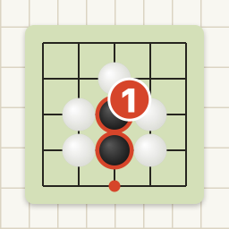

ダメが数で見える石取り囲碁
石の上にダメの数。先に取ったら勝ちの、囲碁の入門の遊び。
7路・9路の小さな碁盤で、黒と白が交互に石を置き、先に決めた数（1つ・3つ・5つ）の石を取った方が勝ちの「石取り囲碁」です。囲碁をはじめる人が最初に覚える「石がいつ取られるか」を、数で見せます。
- ダメの数。縦横につながった石のかたまりごとに、ダメ（呼吸点。となりの空いた交点）の数を石の上の札に出します。ダメが1つ（アタリ）のかたまりは朱の輪で光ります
- 置く前の見こみ。盤を押さえている間は、そこに置いたときのダメの数や、取れる石の数が出ます。指を離すと置きます
- 取られる前にもどる。取られて負けたら、取られる1手前の盤にもどり、どこに打てば逃げられたかを藍の輪で見せます
- 練習問題。「1手で取る」「アタリから逃げる」100問ずつ。どれも答えは1つだけです
- コンピュータ（やさしい・ふつう・つよい）と、または1台をふたりで。待った・ヒント・記録もあります
- 登録・課金・オンラインの対戦はありません。記録はこの端末の中だけに保存します。画面のいちばん下に小さな広告が出ます（画面いっぱいの広告・動画の広告は出しません）